Differential Profile¶
Description¶
The first step of Differential Cryptanalysis is to compute the characteristics of inputs and the outputs of the S-boxes, which we will then combine together to form a characteristic for the complete cipher. Consider a  S-box with input 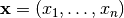 and output 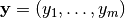. All difference pairs of an S-box, , can be examined and the probability of
S-box with input 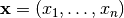 and output 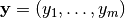. All difference pairs of an S-box, , can be examined and the probability of  given
given  can be derived by considering input pairs such that 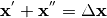. Since the ordering of the pair is not relevant, for a S-box we need only consider all
can be derived by considering input pairs such that 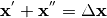. Since the ordering of the pair is not relevant, for a S-box we need only consider all  values for
values for  and then the value of constrains the value of
and then the value of constrains the value of  to be 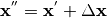. We can derive the resulting values of for each input pair 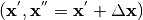.
to be 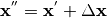. We can derive the resulting values of for each input pair 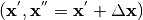.
We can tabulate the complete differential data for an S-box in the Differential Profile (In the literature, an equivalent matrix called Difference Distribution Table is used as well), which the rows represent values and the columns represent values.
If we divide each element in the Differential Profile by the value on 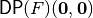, these values represent the probability of the corresponding output difference value given the input difference , that is  , called characteristic. In general, entries in the Differential Profile with fewer bits set in the and that have higher probability are desirable.
, called characteristic. In general, entries in the Differential Profile with fewer bits set in the and that have higher probability are desirable.
Let  , if we denote by 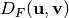 the set of vectors where the difference Vector Boolean Function of F in the direction of 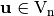 coincides with
, if we denote by 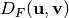 the set of vectors where the difference Vector Boolean Function of F in the direction of 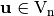 coincides with  by:
by:
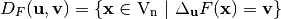
Let where  . The matrix containing all possible values of is referred to as its XOR or Differential Distribution Table.
. The matrix containing all possible values of is referred to as its XOR or Differential Distribution Table.
Nyberg in [Nyberg:93] introduced the concept of differential uniformity as a measure of the resistance to differential crytanalysis as follows:
A Vector Boolean function is called differentially -uniform if for all and :
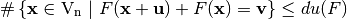
Let (differential uniformity of F) is the largest value in Differential Distribution Table of F (not counting the first entry in the first row), namely,
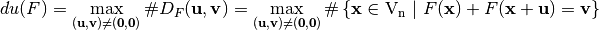
Let define the function 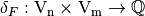 as: .
The Differential Profile of F can be represented by a matrix whose rows are indexed by and whose columns are indexed by in lexicographic order, denoted by 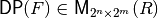 and defined as follows:
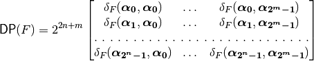
The maximum value of is called the differential potential of F:
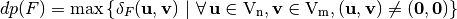
The differential uniformity of and its differential potential are related as: .
It is a measure of the robustness against differential cryptanalysis where 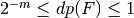 and the lower bound holds if and only if F is bent and the upper bound is reached when F is linear or affine. The differential uniformity of and its differential potential are related by .
Library¶
Note that the Differential Profile does not uniquely determine a Vector Boolean function. Thus, a VBF class cannot be initialized by its Differential Profile. To obtain its representation as Differential Profile, the following method must be used:
void DAT(NTL::mat_ZZ& DP, VBF& F)
In the VBF library, several methods have been defined in order to analyse the feasibility of differential cryptanalysis: Differential potential and Differential relations associated with a specific value of the Differential profile. The method used to obtain the differential potential is the following:
void dp(NTL::RR& x, VBF& F)
If we want to obtain the characteristics associated with the value of the Differential Profile “w”, we will use this method:
void differential(NTL_SNS ostream& s, VBF& a, ZZ& w)
If we want to obtain the probability that a characteristic holds with the value of the Differential Profile “w”, we will use this method:
void ProbDif(NTL::RR& x, VBF& a, NTL::ZZ& w)
Example¶
The following program finds out the Differential Profile of a Vector Boolean function together with the characteristics that have the highest value, except from the value in , their probability, this highest value and the differential potential.
#include <iostream>
#include <fstream>
#include "VBF.h"
int main(int argc, char *argv[])
{
using namespace VBFNS;
VBF F;
NTL::mat_GF2 T;
NTL::ZZ w;
NTL::RR p;
ifstream input(argv[1]);
if(!input) {
cerr << "Error opening " << argv[1] << endl;
return 0;
}
input >> T;
F.puttt(T);
input.close();
cout << "The Differential Profile is:" << endl;
cout << DAT(F) << endl;
w = maxDAT(F);
cout << endl << "The highest value of the Differential Profile is= "
<< w << endl;
cout << endl << "The characteristics that have the highest value are:"
<< endl;
differential(cout,F,w);
ProbDif(p,F,w);
cout << endl << "These expressions hold with probability= " << p << endl;
cout << endl << "The differential potential is= " << dp(F) << endl;
return 0;
}
If we use as input of this program the Truth Table of NibbleSub, the output of the program would be the following:
The Differential Profile is:
[[4096 0 0 0 0 0 0 0 0 0 0 0 0 0 0 0]
[0 0 0 512 0 0 0 512 0 512 1024 0 1024 512 0 0]
[0 0 0 512 0 1536 512 512 0 512 0 0 0 0 512 0]
[0 0 512 0 512 0 0 0 0 1024 512 0 512 0 0 1024]
[0 0 0 512 0 0 1536 0 0 512 0 1024 512 0 0 0]
[0 1024 0 0 0 512 512 0 0 0 1024 0 512 0 0 512]
[0 0 0 1024 0 1024 0 0 0 0 0 0 512 512 512 512]
[0 0 512 512 512 0 512 0 0 512 512 0 0 0 0 1024]
[0 0 0 0 0 0 512 512 0 0 0 1024 0 1024 512 512]
[0 512 0 0 512 0 0 1024 512 0 512 512 512 0 0 0]
[0 512 512 0 0 0 0 0 1536 0 0 512 0 0 1024 0]
[0 0 2048 0 0 512 0 512 0 0 0 0 0 512 0 512]
[0 512 0 0 512 512 512 0 0 0 0 512 0 1536 0 0]
[0 1024 0 0 0 0 0 1024 512 0 512 0 512 0 512 0]
[0 0 512 1024 512 0 0 0 1536 0 0 0 0 0 512 0]
[0 512 0 0 1536 0 0 0 0 1024 0 512 0 0 512 0]
]
The highest value of the Differential Profile is= 2048
The characteristics that have the highest value are:
[1 0 1 1]->[0 0 1 0]
These expressions hold with probability= 0.5
The differential potential is= 0.5
The figure represents the Differential Profile of NibbleSub and emphasizes in blue the elements which achieve the highest value.